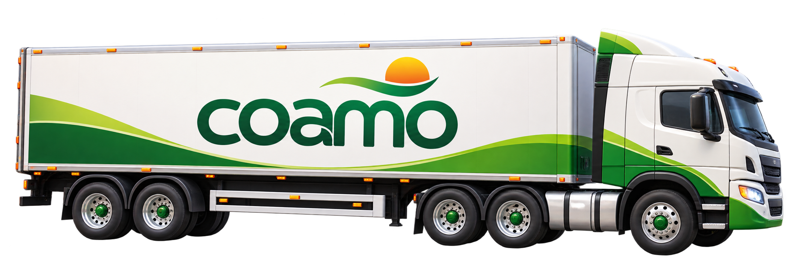

A
B
C
D

COAMO GAMES · MEMÓRIA E OPERAÇÃO
Silo em
Silo em
Equilíbrio
Cada silo recebe apenas um tipo de produto. Descubra os destinos, memorize os silos e mantenha a operação funcionando sem deixar nenhuma carga ir para o lugar errado.
75 s
por partida
4
silos secretos
5
vidas
1
produto por silo
🧠
Memorize os destinos.
Os produtos dos silos não ficam identificados. Errar o destino custa uma vida.
Os produtos dos silos não ficam identificados. Errar o destino custa uma vida.


TEMPO
01:15
PONTOS
0
COMBO
x0
VIDAS
❤❤❤❤❤
Para qual silo essa carga deve ir?
Descubra os destinos e
memorize cada silo.
Operação iniciada
🌽
CARGA CHEGANDO
Milho
+14%
🧠
Memorize os destinos
Cada silo recebe somente
um produto.
Se errar, você perde
uma vida.


🏆
OPERAÇÃO CONCLUÍDA
Memória Operacional Ouro
Excelente desempenho. Você memorizou os destinos e manteve a operação funcionando.
0
pontos
0%
precisão
x0
melhor combo
0
cargas corretas
0
erros
Reinício automático para
o próximo visitante.